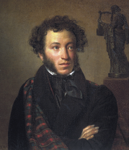
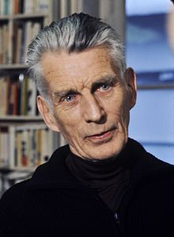

3.John Keats was one of the main figures of the second generation of Romantic poets, along with Lord Byron and Percy Bysshe Shelley.He was known to doodle flowers in the margins of his medical notes.

1.Alexander Pushkin'snotebooks are celebrated for their superabundance of marginal doodles, which include sketches of friends' profiles, hands, and feet. These notebooks are regarded as a work of art in their own right. Full editions of Pushkin's doodles have been undertaken on several occasions.Some of Pushkin's doodles were animated by Andrei Khrzhanovsky and Yuriy Norshteynin the 1987 film "My Favorite Time"

2.Samuel Barclay Beckettwas an Irish novelist, playwright, short story writer, theatre director, poet, and literary translator.His most famous work might be Waiting for Godot, but he was a prolific writer, who produced a pile of other dramatic works and novel. And, like most writers, not all of his works were successes. One of his novels, Murphy, was rejected 40 times before it was published in 1938 and never made much money.And it's those doodles that, for most of us, might be the most exciting part of the manuscript.
3.John Keats was one of the main figures of the second generation of Romantic poets, along with Lord Byron and Percy Bysshe Shelley.He was known to doodle flowers in the margins of his medical notes.

4.Mathematician Stanislaw Ulam developed the Ulam spiral for visualization of prime numbers while doodling during a boring presentation at a mathematics conference.The Ulam spiral or prime spiral is a graphical depiction of the set of prime numbers.

5.Rabindranath Tagore was a Bengali poet, writer, music composer, and painter from the Indian subcontinent.Doodling art of Rabindranath Tagore exhibited in Uttarayan in Shantiniketan.Tagore, while composing poems or prose would cross out a word or phrase. These pen-through erasures made him uneasy. His desire to rescue these islands of crossed out spots made him join them into some designs.Initially they would form some visually decorative pattern then they would form some kind of zoomorphic shapes.